Obama, Fukui: things to do, food and stays
Obama · Fukui
Obama
Highlighted on the Fukui map.
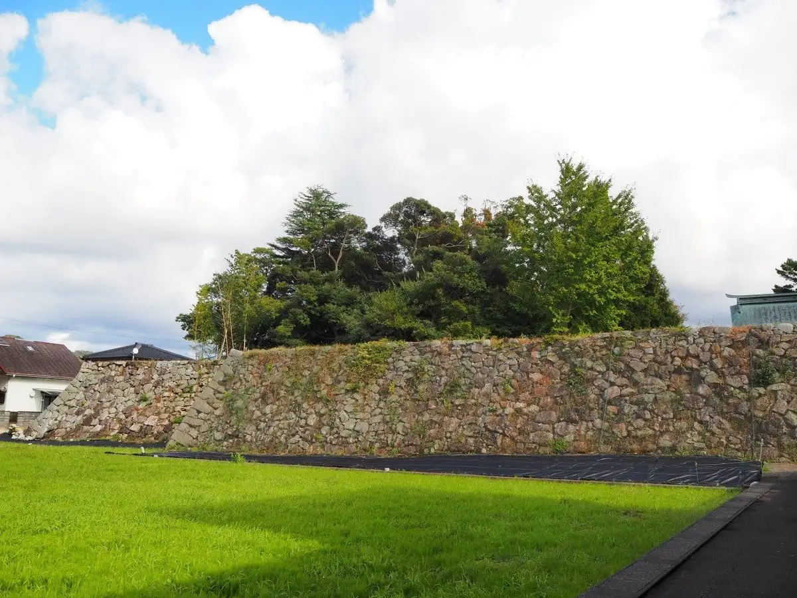
Stay
sea-auberge shitsumi 海のオーベルジュ志積
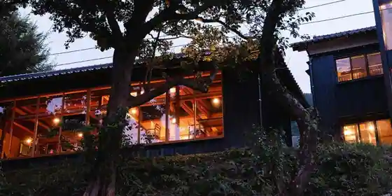
sea-auberge shitsumi Umi No Oberuju Shitsumi
御食国若狭の海、食、文化を堪能する宿 若狭佳日
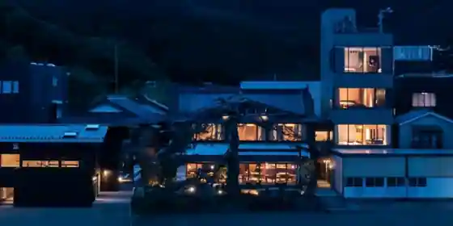
Miketsukuni Wakasa No Umi, Shoku, Bunka Wo Tanno Suru Yado Wakasa Kajitsu
湊町の一棟貸し町家宿 ひとひ小浜（旧：小浜町家ステイ）
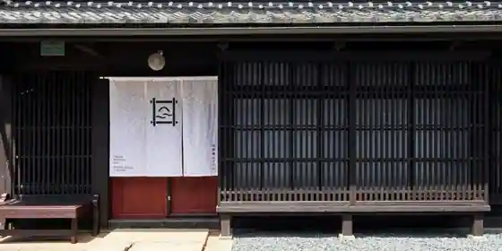
Minatomachi No Hitomune Kashi Choka Yado Hitohi Obama (Kyu : Kohamacho Ie Sutei)
セカンドハウス広峰
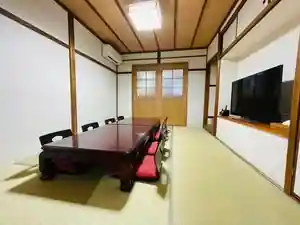
Sekando House Ko Mine
ビジネスホテル山海
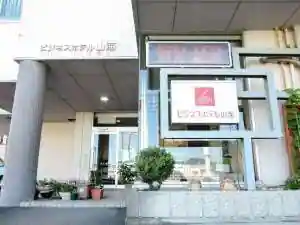
Business Hotel Sankai
Hotel in Ekimae, Obama with Wi-Fi and business travelers; 5-minute walk from Obama Station.
夕雅と旬彩の宿 せくみ屋
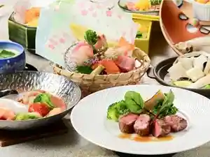
Yu Masa To Jun Sai No Yado Sekumi Ya
Inn in Shirahige, Obama with open-air baths.
アプロディール華双寿
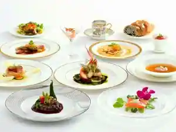
Apurodiru Hana So Hisashi
ホテルアーバンポート
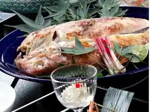
Hotel Abanpoto
四季彩の宿 花椿
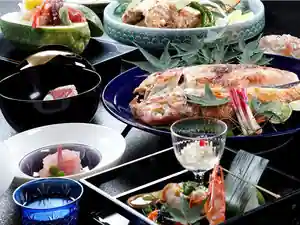
Shiki Sai No Yado Hanatsubaki
湊町の一棟貸し町家宿 ひとひ小浜
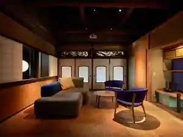
Minatomachi No Hitomune Kashi Choka Yado Hitohi Obama
町宿 紬
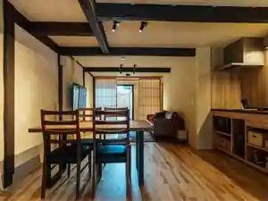
Machi Yado Tsumugi
椿とことは
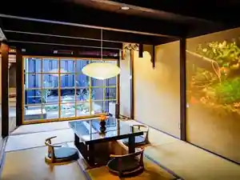
Tsubaki Tokotoha
Dining
寿し島川
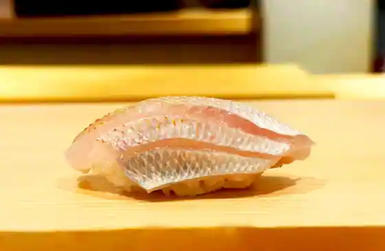
Hisashi Shi Shima Kawa
レストラン 内外海
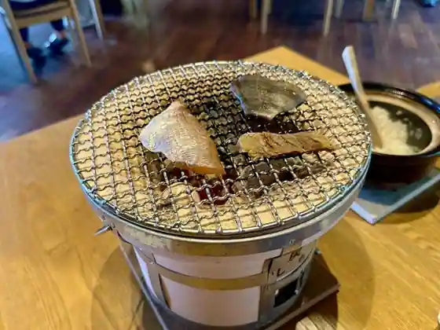
Restaurant Naigai Umi
sea-auberge shitsumi
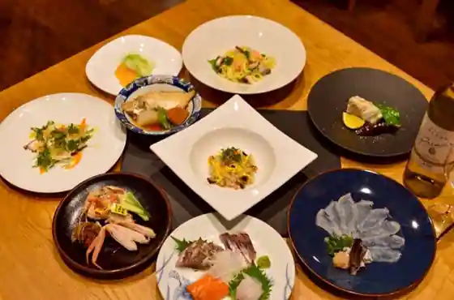
sea-auberge shitsumi
五右衛門
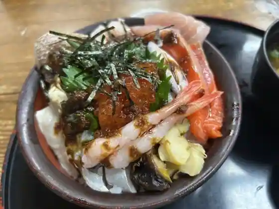
Goemon
お食事処 濱の四季
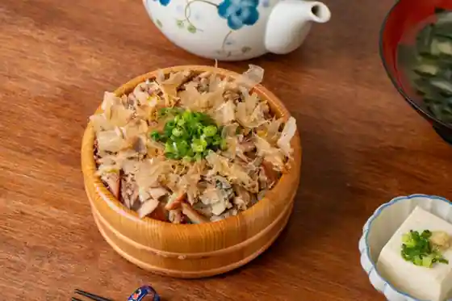
O Shokuji Tokoro Hama No Shiki
伊勢屋
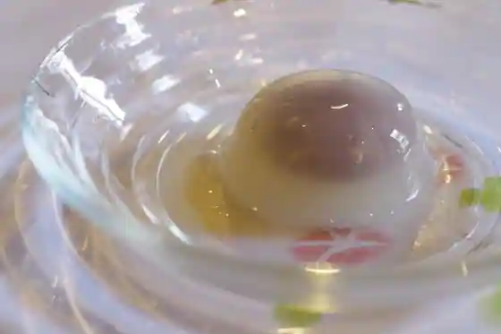
Iseya
食彩 ごえん
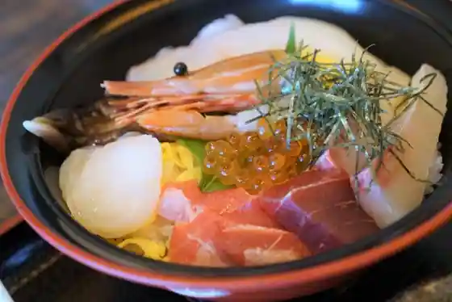
Shokusai Goen
こだま食堂
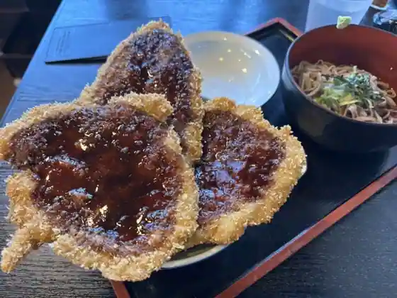
Kodama Shokudo
若廣
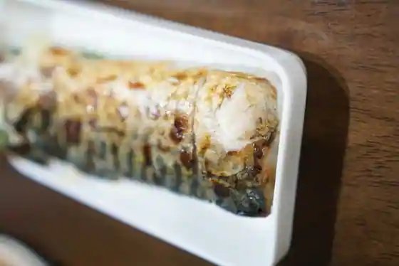
Jaku Ko
やまと寿司 本店
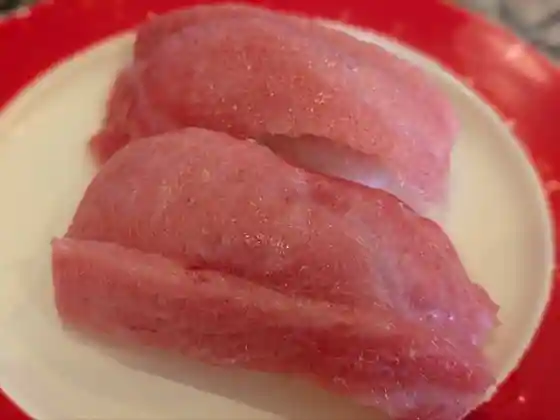
Yamato Sushi Hon
レストラン 海幸苑
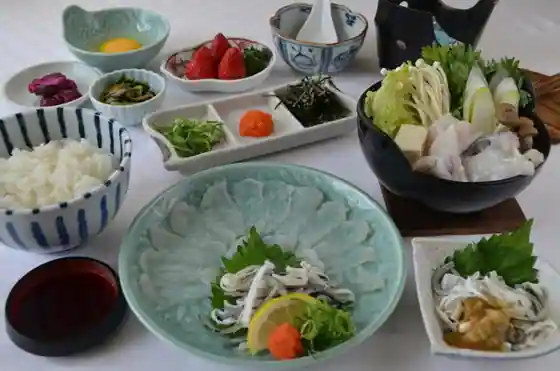
Restaurant Umisachi En
こころ
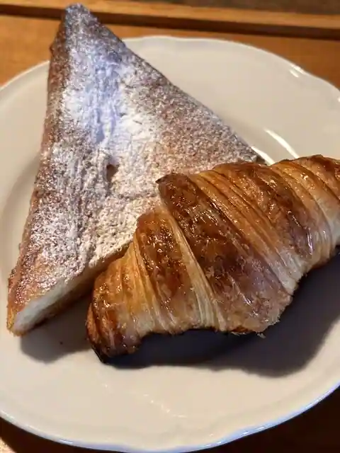
Kokoro
すし良
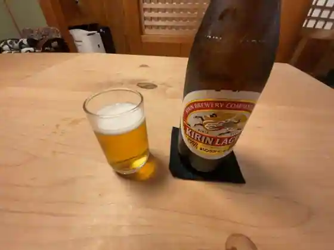
Sushi Ryo
響
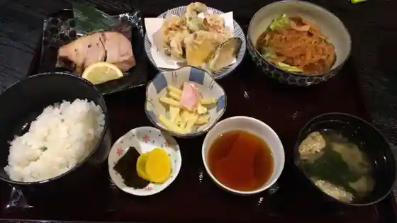
Kyo
若狭ふぐの宿下亟
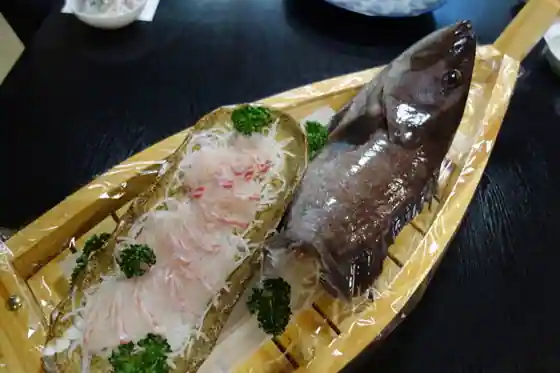
Wakasa Fuguno Yado Shita Kyoku
きらく亭
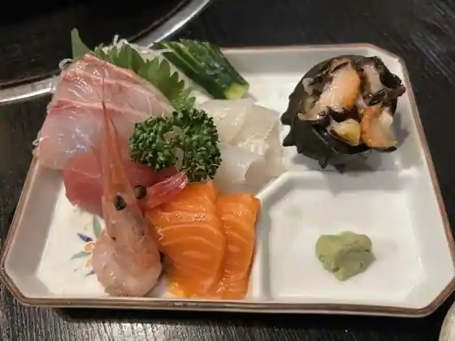
Kiraku Tei
ミスティ
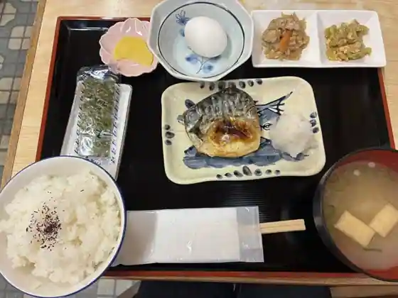
Misutei
はまがわ
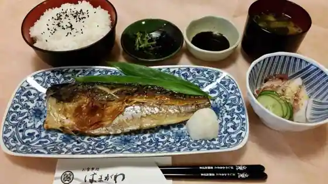
Hamagawa
治平
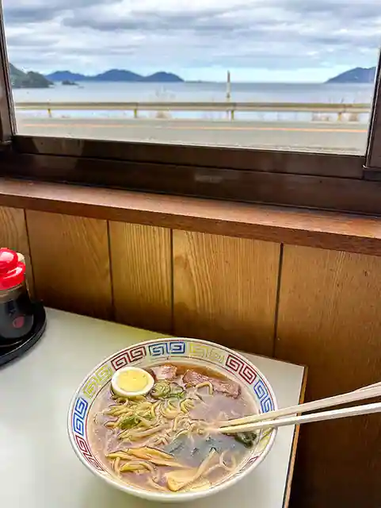
Jihei
和久里のごはんや おくどさん
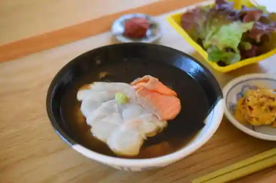
Kazuhisa Sato Nogohanya Okudosan
井上耕養庵
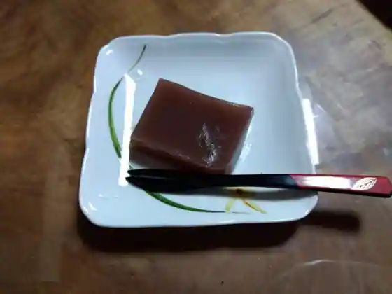
Inoe Ko Yo Iori
すし政本店
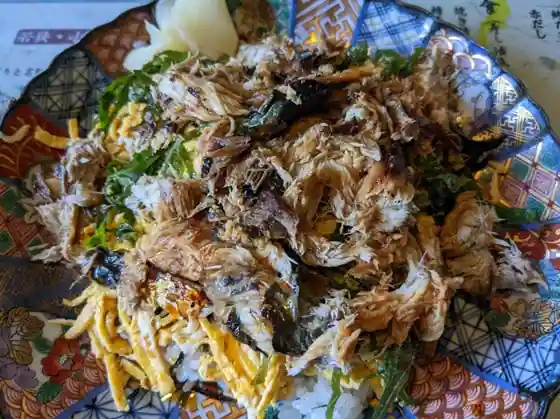
Sushi Masamoto
五味焼
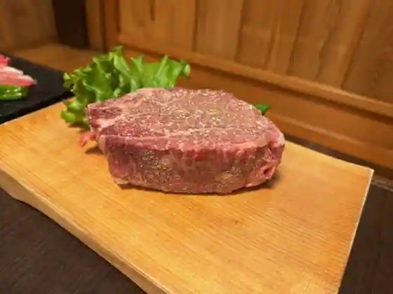
Gomi Yaki
道の駅 若狭おばま
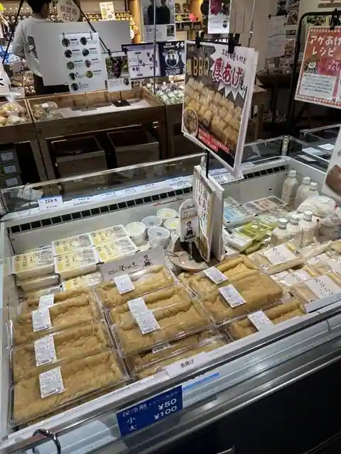
Michi No Eki Wakasa Obama
Sights
Enzeru Line
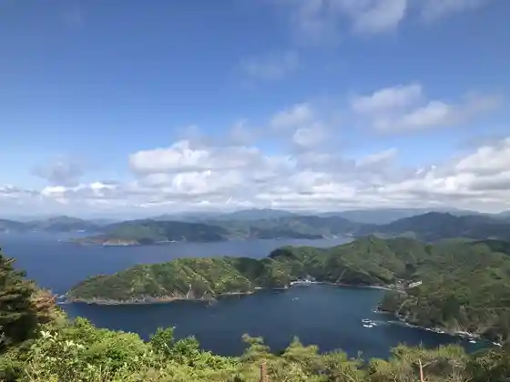
Meisho Sotomo
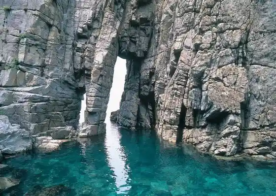
Happyaku Bikuni Nyujo Hora
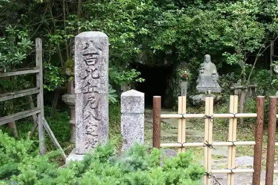
Wakasa Obama O Sakana Center
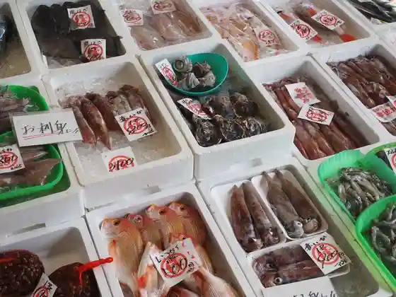
Mantoku Tera
Rentasaikuru − Obama − Wakasa Obama Tourist Information (JR Obama Ekimae)
Wakasa Hime Shrine (Wakasa Ichinomiya)
Miketsukuni Wakasa Obama Shokubunka Kan
Myotsu Tera
San Cho Town
Wakasa Workshop
Wakasa Fisshamanzu Wafu
Saba Kaido MUSEUM (Saba Kaido Museum)
National Wakasa Wan Seishonen Nature no Ie
Roadside Station (Wakasa Obama)
Wakasa no Yado Wakasa Fuguto Kani no Hotel Sekumi Ya
GOSHOEN (Go Shoen)
Rentasaikuru - Obama − Obama Saikuringu Center (JR Higashi Obama Ekinai)
Ningyo no Hama Beach
Hosshin Tera
Nomichi Port Yashiro
Obama Joshi
Wakasa Hiko Shrine (Wakasa Ichinomiya)
Obama Machi no Eki Asahi Za
Miyagawahimawari Hatake
Shrine Tera
Sora In Tera
Obama Park
Nishi Ogawa Beach
Wakasa History Museum
Hashi no Furusato Kan WAKASA
Kumo Shiro Mizu
Mantoku Tera no Yama Momiji
Tada Tera
SUP Village Yashiro
Wakasa Koigawa Shiisaido Park
Mameidoterasu
Ensho Tera
Myo Suke Tera
Tsukamoto Mingei Center
Haga Tera
Obama Streetscape Hozon Museum
Myoraku Tera
Wakasa no Sato Park
Eigenji
Yamakawa Tomiko Memorial Museum
Yashiro Beach
A no Beach
Kokubunji (Obama)
U no Se Koen Museum
Umeda Unpin Zo
Shitsumi Beach
Inu Kuma Beach
Mantoku Tera no Goshiki Tsubaki
[ Genzai Kyukanchu ] Shinrin no Mizu PR Kan
Wakasa Obama Ningyo Myojin
Tsune Taka Tera
Yashiro Kannon Do Fukuju Tera
Streetscape to Shoku no Kan Shiki Sai Kan Sui Gatsu
Obama Yakusho